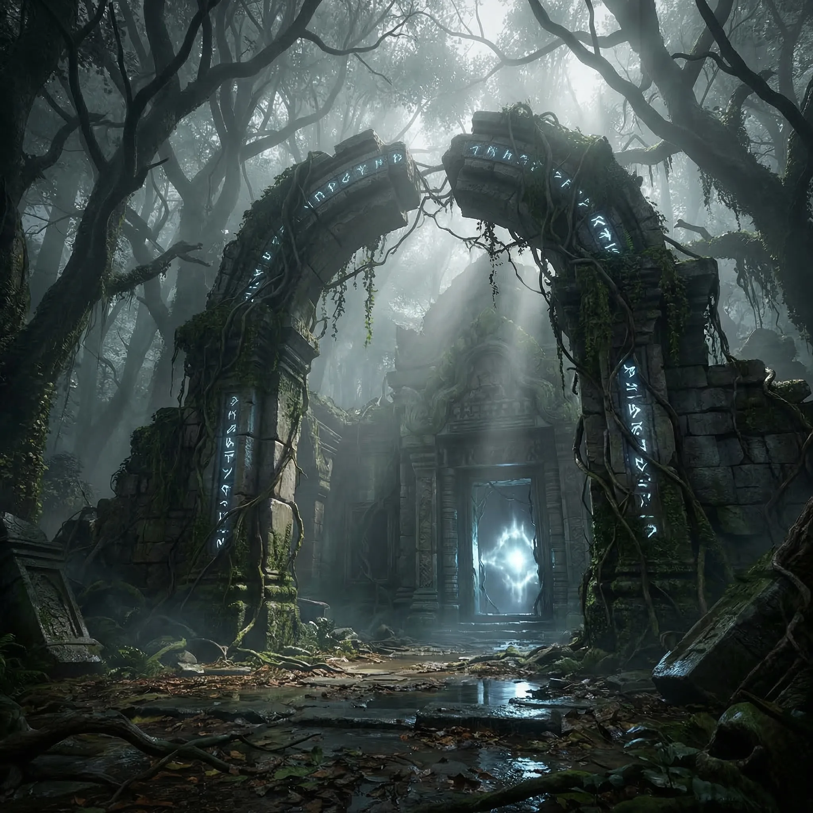
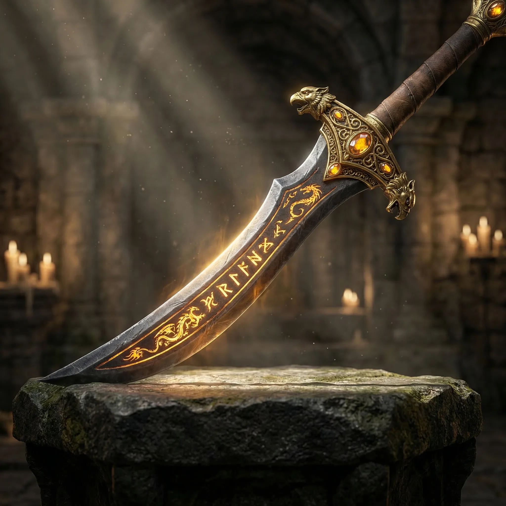
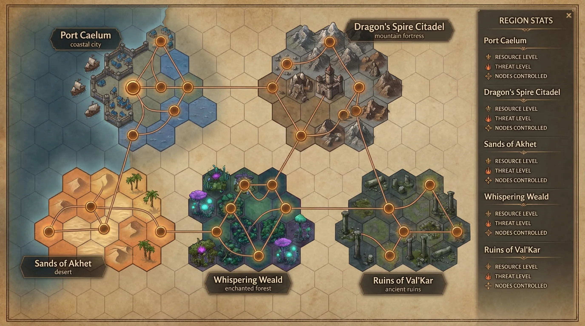
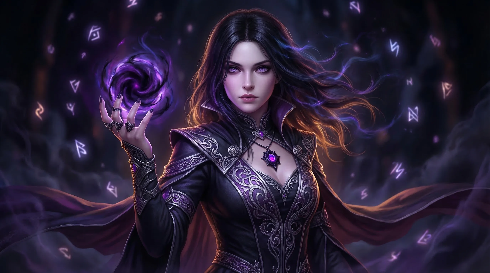
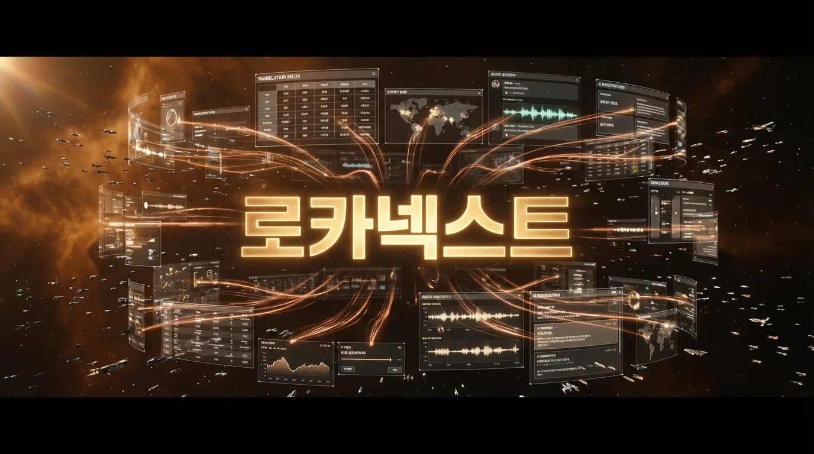

기존 워크플로우를 바꾸지 않습니다. 더 스마트하게 만듭니다.
번역가에게 시각적 맥락을
제공합니다
StringID 하나만 선택하면 관련 게임 이미지, 음성 데이터, TM 매칭, AI 분석 결과가 자동으로 표시됩니다.
캐릭터를 선택하면
모든 것이 보입니다
번역 중인 문장에서 캐릭터 이름이 감지되면 자동으로 프로필이 표시됩니다. 성별, 나이, 직업, 종족 — 그리고 해당 캐릭터가 등장하는 모든 퀘스트와 상호작용하는 NPC 목록까지. 음성 샘플도 함께 제공되어 캐릭터의 말투와 톤을 파악할 수 있습니다.

ruins_entrance.dds + Map Pin (B1)
item_sword_dawn.dds + Stats문장 안의 모든 개체를
자동으로 감지합니다
Aho-Corasick 알고리즘이 글로서리 용어집을 스캔하여 위치, 캐릭터, 아이템 등 모든 개체를 실시간으로 감지합니다. 감지된 각 개체는 staticinfo 데이터포인트에 매핑되어 이미지, 오디오, 지도 위치가 자동으로 표시됩니다. N-gram 없이 O(n+m) 단일 패스로 수행됩니다.
AI가 번역을 제안하고
컨텍스트를 분석합니다
번역 메모리 매칭을 넘어 AI가 직접 번역을 제안합니다. 벡터 임베딩으로 유사 문장을 검색하고, 캐릭터 말투와 게임 장르를 분석하여 최적의 번역안을 제시합니다. 컨텍스트 요약은 번역가가 원문의 의도를 즉시 파악할 수 있게 합니다.
에셋이 없으면
AI가 자동 생성합니다
이미지가 없다면? Nano Banana가 메타데이터와 컨텍스트를 분석하여 게임 에셋 이미지를 자동으로 생성합니다. 음성이 없다면? ElevenLabs가 스크립트 텍스트에서 캐릭터 목소리를 75ms 이내에 생성합니다. 3분 녹음으로 음성 복제도 가능. 번역가는 항상 완전한 맥락에서 작업할 수 있습니다.
음성 데이터로
톤과 뉘앙스를 파악
StringID에 직접 연결된 음성이 없더라도 문장 속 캐릭터 이름을 감지하여 해당 캐릭터의 모든 음성 샘플을 자동으로 찾아냅니다. WEM 파일을 vgmstream으로 변환하여 즉시 재생 가능. 한국어/영어 스크립트가 함께 표시되어 원문과 번역을 동시에 확인합니다.
스마트 검색 알고리즘
전체 텍스트 / 줄 단위 분리 로직으로 100% 정확 매칭과 퍼지 매칭을 동시에 수행합니다. 번역과 게임 개발 모두에 적용됩니다.
사용자에게 여명의 힘을 부여한다.
공격력 +120, 화염 속성 부여.
전설에 따르면, 여명의 첫 빛이 검에 깃들어
어둠의 세력을 물리칠 수 있다고 한다.
게임 세계의
살아있는 백과사전
번역팀과 게임 개발팀 모두가 접근하는 통합 코덱스. 월드맵에서 리전을 클릭하면 캐릭터, 아이템, 퀘스트, 이미지, 오디오 — 모든 정보가 연결됩니다.
일관성: 92%
76% 고대의 탑 (Region_07)
61% 수정 동굴 (Region_11)
매일 반복되는
비효율
-
컨텍스트 없는 번역이미지, 음성, 게임 장면 — 번역가가 직접 찾아봐야 하는 모든 것
-
네이밍 불일치리전 A의 아이템과 리전 B의 아이템이 다른 톤으로 작성됨
-
수작업 QA용어 일관성, 누락 번역, 형식 오류 — 전부 사람이 눈으로 확인
-
AI 활용도 제로2026년인데 Excel + VSCode — 시맨틱 검색도, AI 제안도 없음
AI가 모든 것을
자동화합니다
-
자동 컨텍스트 제공StringID 선택 → 이미지, 음성, 게임 장면이 자동으로 표시. 없으면 AI가 생성
-
일관성 검증 엔진벡터 임베딩으로 유사 아이템 검색, 리전 톤 분석, 네이밍 패턴 검증
-
AI QA + 글로서리 자동화Aho-Corasick 실시간 스캔, 용어 일치율 자동 검증, 누락 경고
-
AI 번역 + 네이밍 제안컨텍스트 기반 번역 제안, 게임 개발자를 위한 이름/설명 추천
엔터프라이즈급 설계
- Electron 35 + Svelte + Vite
- FastAPI Backend (embedded)
- FAISS Vector Search
- Model2Vec 256-dim Embeddings
- SQLite Offline Mode
- PostgreSQL + PGBouncer
- WebSocket Real-time Sync
- 100+ Concurrent Users
- Auto-fallback Online ↔ Offline
- Model2Vec 256-dim Semantic Search
검증된 기술
| Frontend | Svelte 5, Vite, Electron 35 |
| Backend | Python 3.11, FastAPI, Uvicorn |
| DB | PostgreSQL 16 + PGBouncer |
| Search | FAISS, Model2Vec (256-dim) |
| AI/ML | Model2Vec (256-dim, 101 languages) |
| CI/CD | Gitea Actions, GitHub Actions |
- GPL 없음, AGPL 없음
- 상용 사용 가능
- 수정 및 배포 가능
- 라이선스 비용: $0
누가, 무엇을, 지금
사용하고 있는지
실시간 사용자 현황, AI 엔진 사용량, 에러 로그 — 관리자가 필요한 정보만 한눈에 파악합니다.
이 페이지는 AI 시너지로
완성되었습니다
12장의 AI 생성 이미지, 74개 스킬, GSD 프로젝트 관리, 자동 코드 리뷰 — AI 도구의 시너지로 반나절 만에 완성되었습니다.


같은 AI 시너지가
당신의 팀을 지원합니다
개발을 지휘하는 AI 에이전트 군단
67개의 스킬, 175+ 도구, 11개 에이전트 — Queen이 지휘하고 Worker가 실행하는 자율 개발 시스템.

새로운 기준